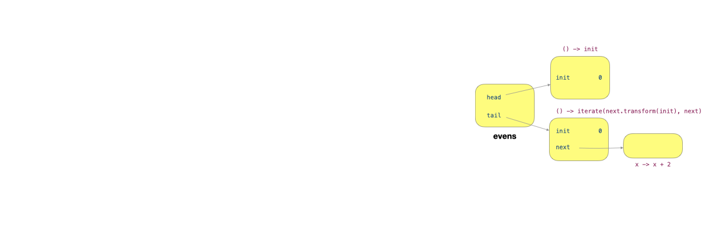
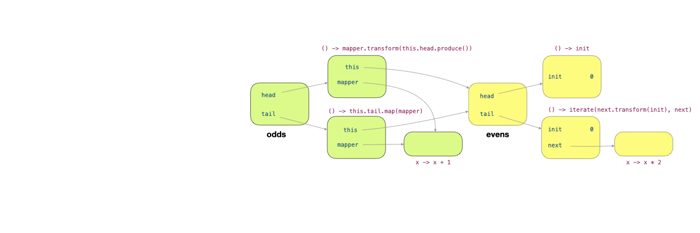
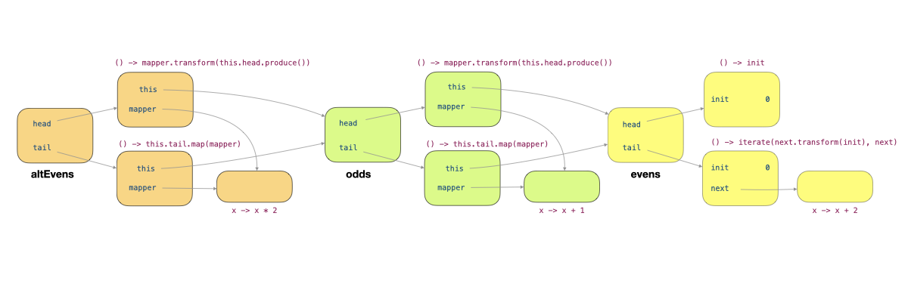
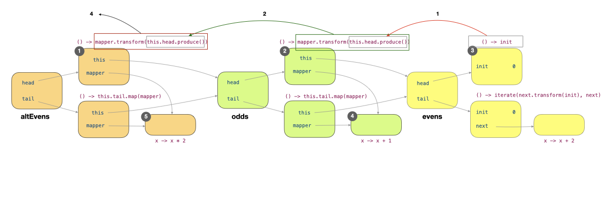

Unit 30: Infinite list
Preliminary: An Eagerly Evaluated List
Let's consider first how we can represent an eagerly evaluated, finite list, recursively. A simple way is to treat the list as a recursive structure, containing a head and a tail, with the tail being a list itself. We have a special terminating list called EmptyList that we use to terminate the EagerList.
1 2 3 4 5 6 7 8 9 10 11 12 13 14 15 16 17 18 19 20 21 22 23 24 25 26 27 28 29 30 31 32 33 34 35 36 37 38 39 40 | |
Let's provide two factory methods called generate and iterate, that will populate our EagerList for us.
1 2 3 4 5 6 7 8 9 10 11 12 13 | |
Let's now provide the standard operation map so that we can transform the items in the list.
The map method takes a lambda expression as the parameter, applies it recursively to every element in the list, and returns the resulting new list.
1 2 3 | |
We can also provide the filter method, that takes in lambda expression as a parameter and tests if each element in the list passes the test. We return the list containing only the elements that pass the given test.
1 2 3 4 5 6 | |
We have the special EmptyList cases,
1 2 3 4 5 6 7 8 9 | |
The resulting list can be used this way:
1 2 3 4 5 6 | |
An Infinite List
Lazy evaluation allows us to delay the computation that produces data until the data is needed. This powerful concept enables us to build computationally-efficient data structures. We will focus on building a list with a possibly infinite number of elements -- something that couldn't be done without lazy evaluation. Any eager-evaluation-based solution will just run in an infinite loop if the list is infinitely long. For instance,
1 | |
Just as we saw in the previous unit, we can delay a computation by using the Producer functional interface (or anything equivalent). Instead of doing compute() which is immediately evaluated when executed, we replace it with a Producer () -> compute(), which "stores" the computation in an instance of Producer, and we only call it when we invoke the produce() method.
Instead of storing the head and tail of the list, we can think of an infinite list as consisting of two functions, the first is a function that generates head, and the second is a function that generates the tail. Our InfiniteList looks like this:
1 2 3 4 5 6 7 8 9 10 11 12 13 14 15 16 17 | |
EmptyList for now. We will need it if we have operations that truncate the list to a finite one, but let's not worry about it yet.
We now change the generate method to be lazy, by passing in a producer instead. We no longer need to pass in the size, since the list can be infinitely long!
1 2 3 4 | |
We can change iterate as well to only iterate through and generate the next element when we need it. Note that we no longer need to provide the terminating condition cond.
1 2 3 4 | |
Here are some examples of how to use the two methods above:
1 2 3 4 5 | |
Both the lists ones and evens are infinitely long, but due to lazy evaluation, we do not generate all the elements in advance, but only when an element is needed.
Map
Let's now write the lazy version of map as well:
1 2 3 4 5 | |
The map method is lazy. All it does is create a new list initialized with a new lambda expression that applies the given lambda expression mapper to the head and the tail.
When we run:
1 2 | |
We get an infinite list with elements 1, 3, 5, 7, etc, but the values in the list are not realized until they are needed, just like before. Only when we call head() will we evaluate the lambda expressions and obtain the results:
1 | |
Under The Hood
It is worthwhile to trace through the code and understand how head() works. For simplicity, let's put all our code together for easy reference.
1 2 3 4 5 6 7 8 9 10 11 12 13 14 15 16 17 18 19 20 21 22 23 24 25 26 27 28 29 30 31 32 33 | |
Let's rewrite the statement
1 | |
into something uglier and more verbose, but with intermediate variables to help us explain what happens when the statement above is invoked.
1 2 3 4 | |
Let's look at what gets created on the heap when we run
1 | |

The figure above shows the objects created. evens is an instance of InfiniteList, with two fields, head and tail, each pointing to an instance of Producer<T>. The two instances of Producer<T> capture the variable init. The tail additionally captures the variable next, which itself is an instance of Transformer<T,T>.
Next, let's look at what gets created on the heap when we run
1 | |

The figure above shows the objects added. odds is an instance of InfiniteList, with two fields, head and tail, each pointing to an instance of Producer<T>. The two instances of Producer<T> capture the local variable this and mapper of the method map. mapper refers to an instance of Transformer<T, T>. Since the method map of evens is called, the this reference refers to the object evens.
After calling
1 | |
We have the following objects set up.

Let's now trace through what happens when we call altEvens.head(). This method leads to the call this.head().produce(), where this refers to altEvens. The call to produce invoked mapper.transform(this.head.produce()) of the producer labelled 1 in the figure below. This leads to this.head.produce() of this producer being called. Within this producer, this refers to odds, and so this.head.produce() invoked mapper.transform(this.head.produce()) of the producer labelled 2. Now, this refers to evens, and this.head.produce() causes the producer () -> 1 (labelled 3) to produce 1.

The execution now returns to the invocation of mapper.transform(this.head.produce()) and call mapper.transform(1) (labelled 4). This returns the value 2, which we pass into the mapper.transform(2) (labelled 5). The mapper is x -> x * 2 so we have the result 4, which we return from altEvens.head().
This process shows a very different order of execution than EagerList.
If we run,
1 2 3 4 | |
The method iterate generates all the elements first, then all the elements gets map-ed with x -> x + 1, then with x -> x + 2, and then the first element is retrieved.
When we run,
1 2 3 4 | |
The method calls iterate and map only set up the producers that call other producers. The call to head() is the trigger that causes the chain of producers to produce a value.
Filtering A Lazy List
Now, let's consider how we would filter an InfiniteList. This is a bit trickier. The following naive version does not work.
1 2 3 4 5 6 7 | |
There are two things wrong with this. First, Line 3 cond.test(this.head()) is actually eager. It computes the head to test if it passes the given condition. Second, Line 6 is eager, it produces the tail to recursively filter it.
To make filter lazy, we have to perform the test in the producer that produces the head. But if the test fails, we have to mark the head as filtered.
1 2 3 4 | |
In the code above, we use null to indicate that the head is filtered for simplicity. It is not a good practice, however since null could be a valid value in an infinite list.
Putting the abuse of null aside, the possibility that the head produces a value that is filtered affects other methods. The methods head and tail have to be changed to:
1 2 3 4 5 6 7 8 9 | |
Further Improvements
We have seen Maybe<T> as an abstraction that encapsulates a value that is either there or is missing. Instead of using null to present a value that is not there, it is better to use Maybe<T> to encapsulate the value of the head.
Further, our implementation of InfiniteList<T> so far does not make use of memoization. The same value keeps getting produced repeatedly. We have built the class Lazy<T> that encapsulates a value that is produced on-demand with memoization to guarantee that it is produced at most once. It is better to use Lazy<T> to encapsulate the value of the head as well.
We leave the construction of an InfiniteList<T> that uses Lazy<Maybe<T>> for its head as an exercise.